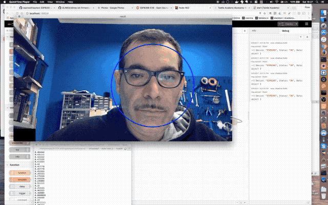

Concept: smiling has a positive effect on yourself and people around you. We want to create a way for "motivating" people to smile more.
What if smiles could produce energy to make stuff work?
Smile Power is a smart-mirror, that is able to detect when you smile. This allows to control equipment, lights, hair-dryers, electric razors, and so on using your smile.
The idea is very flexible, and can be applied to many projects.

The smile recognition setup directly controlling a light
Smile Power works capturing images from behind the mirror and analyzing them using a classifier able to recongnize a picture containing a smile. This is achieved training the classifier with a dataset containing many examples. The reading is then used to control wireless devices like switches or to integrate it with internet services
The setup is composed by three main parts:
The smile recognition is performed on the Raspberry PI using a c++ program from the OpenCV sample code, edited to output a string such as:
smile: 0.39
Performing smile-recognition using OpenCV
You can find instructions on how to compile OpenCV on Raspberry PI 2 in the resources links below
The code runs capturing images from the webcam at 480p, 5 frames per second, then applying two different classifiers: the first is used to recognize the face boundaries, and the second to recognize the smile in the area extracted from the previous image.
Classifier data is stored in two different xml files shipped with OpenCV, for this example the haarcascade_frontalface and haarcascade_smile classifiers where used.
Even at a lower framerate than a PC, the Raspberry 2 cores handle this process pretty well.
Data from the smile recognition program, a number from 0 to 1, is sent to the controller using a WebSocket connection, containing output from the commandline. This is done using a simple Node.js application called smileserver, that spawns the C++ code.
The controller module is based on Node-red, a visual flow programming environment, that allows to easily compose workflows for IoT devices
The controller module is really optional, as one could control any device directly from the opencv program. The choice to use one allows to tweak the behaviour of the installation and integrate other sensors and actuators
Data flow built with Node-red
In few words, data coming from the smile detector via Websocket are filtered and converted into a boolean output, used to send on-off events to the Smart power socket using HTTP requests.
Using node-red it would be very easy to post a tweet or interact with other devices without changing any part of the logic.
On the latest Raspbian distribution, you can install node red:
sudo npm install -g --unsafe-perm node-redAlso make sure you have installed the node-red-smooth plugin from node-red control panel.
Olimex ESP8266-EVB
This is the simplest part of the project, as there are readily available boards such as the ESP8266-EVB from Olimex that provide all necessary hardware and a convenient way of programming it.
The board integrates and ESP8266 module, a 10A 220v Relay and a Button. Holding the button while powering the board puts it in serial mode and allows to upload a custom firmware.
Olimex IoT Firmware
Instead of the default AT firmware, Olimex provides an advanced IOT Firmware allowing to control all GPIOs including the one attached to the Relay using HTTP or Websocket
Simply sending a POST /relay containing the json string {"relay": 1}, allows to switch on the relay
Source code | Github repo
Smiledetect Opencv |
Node-red flow |
Smileserver
Dependencies
Olimex IOT Firmware |
Node.js |
Node-red
Materials
Olimex ESP8266-EVB Board
Raspberry PI mod. 2
Resources
Installing OpenCV 3.2 on Raspberry Pi 3 - Second Robotics LLC
Fiore Basile is a Fab Academy instructor and staff member based in Cascina, Italy. After graduating Fab Academy he started Fab Lab Toscana, a regional distributed network of labs.
Claudia Simonelli just graduated as an Industrial Designer from ISIA, Florence. She has worked in Fab Lab Toscana for about two years designing products and crafting training programs for young makers and students.